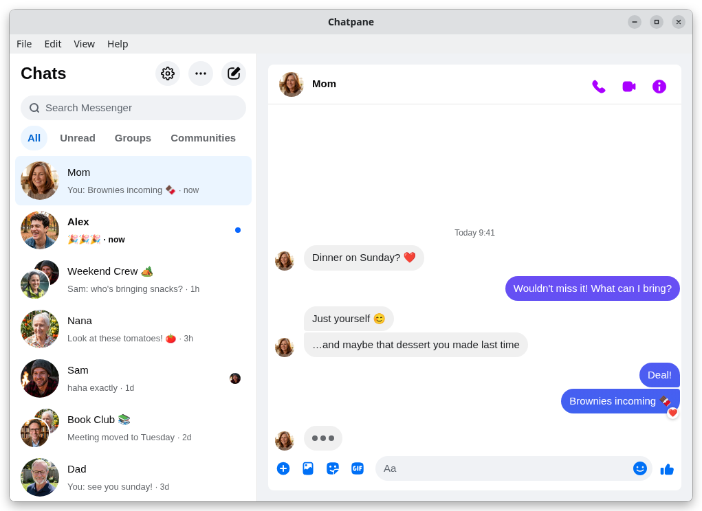

Chatpane for Messenger / Linux
Updated November 2026
A Messenger desktop app for Linux
Meta never made a Messenger app for Linux, and since April 2026 messenger.com redirects to Facebook. Here are the desktop options that work with Messenger today.
Free and open source · .deb, .rpm, AppImage and AUR · x64 and ARM64
The short answer
On Linux, Messenger has only ever been a website, and that website is now facebook.com/messages, inside Facebook. Clients built around messenger.com have had to change or have stopped working well.
Chatpane for Messenger (formerly Carrier) is a free, open-source desktop app that opens your chats in their own window with WebKitGTK, hides the rest of Facebook, and adds native notifications, a tray icon and an unread badge. It is unofficial and not made by Meta.
What changed for Linux users
Linux users always relied on the browser or on unofficial clients such as Caprine, which wrapped messenger.com. On April 16, 2026 Meta retired messenger.com for messaging, and it now redirects to facebook.com/messages. That broke the assumption most Linux clients were built on, and it ended desktop access for Messenger-only accounts without a Facebook profile. The full timeline has the details and sources.
Your options
Ways to use Messenger on Linux
Compare
Linux clients side by side
| Chatpane | Messenger Next | Caprine | Browser | |
|---|---|---|---|---|
| Shows only your chats | Yes | Yes | Built for messenger.com | No, all of Facebook |
| x64 .deb | 5.3 MB | 5.2 MB | 77.6 MB | Not applicable |
| x64 AppImage | 93.4 MB | 80.0 MB | 112.9 MB | Not applicable |
| Built on | WebKitGTK | WebKitGTK | Electron (bundled Chromium) | Your browser |
| Source code | Open (MIT) | Closed | Open (MIT) | Not applicable |
| Latest release | November 2026 | September 2026 | January 2026 | Not applicable |
From each project's latest release on GitHub, checked November 8, 2026. A .deb uses your distribution's libraries; an AppImage carries its own, which is why it is larger.
Which Chatpane package to pick
- Debian, Ubuntu, Mint, Pop!_OS: the .deb, about 5 MB, which uses your system's WebKitGTK.
- Fedora, openSUSE: the .rpm, also about 5 MB.
- Arch and Arch-based: the chatpane AUR package, for example
yay -S chatpane. - Any distribution: the AppImage, around 93 MB because it bundles WebKitGTK. Make it executable and run it.
- Homebrew on Linux:
brew install --cask kristofferR/tap/chatpane. - ARM64 builds of the .deb, .rpm and AppImage are on the releases page.
If you can use your package manager, prefer it: the package is far smaller and follows your system's WebKitGTK updates. There is no Flatpak or Snap package at the moment.
Chatpane on Linux
Chatpane opens the real Messenger, the same one from your browser, so calls, group chats, reactions, photos and your full history are all there and stay in sync with your phone. On Linux it adds:
- Only Messenger. Facebook's Feed, Reels, Marketplace and global search are hidden. Chatpane draws its own window buttons on floating windows and hides them when a tiling window manager such as Hyprland or Sway tiles the window. An optional top menu bar is available.
- Notifications. Native notifications with the sender's photo. You can react, mark as read or mute from them, and reply inline on notification servers that support it, such as KDE Plasma.
- Tray and badge. A tray icon with recent conversations, an unread count, start on login, start in the tray and hide on close.
- Wayland ready. Chatpane picks GTK's Wayland backend on pure Wayland sessions and applies known rendering workarounds for older NVIDIA drivers and Niri.
- Privacy. Hide that you're typing, hide names and avatars for screen sharing, and block Facebook's analytics requests (on by default).

FAQ
Linux questions
Is there an official Messenger app for Linux?
No. Meta only made desktop apps for Mac and Windows, and retired both in December 2025. On Linux, every Messenger app is unofficial and loads the web version, which now lives at facebook.com/messages.
The window is blank. What can I do?
Start Chatpane with CHATPANE_LINUX_WEBKIT_SAFE_MODE=1 chatpane. That turns on WebKitGTK's rendering fallbacks, which fix blank or unstable windows on some GPU and compositor combinations. If it still happens, please open an issue with your distribution and desktop.
Is there a Flatpak or Snap?
Not at the moment. Use the .deb, .rpm, AUR package or Homebrew if you can, or the self-contained AppImage on any distribution.
Can I sign in with a Messenger-only account?
Not on any desktop app. Chatpane loads facebook.com/messages, and since April 2026 Meta only lets Messenger-only accounts chat in the mobile app.
I used Carrier. Do I need to do anything?
No. Chatpane is the new name for Carrier. The chatpane .deb, .rpm and AUR packages replace carrier, and your settings and login carry over.
Is Chatpane made by Meta?
No. Chatpane for Messenger is an unofficial, independent project, not affiliated with Meta. Your messages still go through Messenger itself, so Meta's terms apply there. Chatpane adds no tracking of its own.
Get Chatpane for Linux
Free and open source, for x64 and ARM64.
Or yay -S chatpane · Mac and Windows